| Row | Level | Message | Time | File Of Caller | Line Of Caller |
|---|---|---|---|---|---|
| 1. | INFO | Starting example generate-toilet-facility-result-for-hospital-with-people-capacity-count-unknown-using-toilet-facility-calculator-tool-test for test fixture nz.govt.mbie.specification.calculator.ToiletCalculatorTest | 11:57:24.303 | CubanoMbieFixtureLogger.java | 15 |
| 2. | DEBUG | Navigating to ⇒ https://www.building.govt.nz/building-code-compliance/g-services-and-facilities/g1-personal-hygiene/calculator-for-toilet-pan/toilet-calculator/ | 11:57:24.310 | ToiletCalculatorHomePage.java | 56 |
| 3. Page Object: ToiletCalculatorHomePage | |||||
| 4. | DEBUG | Wait for any ajax requests to complete | 11:57:25.733 | PageObject.java | 46 |
| 5. | TRACE | Run JavaScript ⇒ | 11:57:25.836 | null | -1 |
|
|
|||||
| 6. | TRACE | Run JavaScript ⇒ | 11:57:25.872 | BasePageObject.java | 339 |
|
|
|||||
| 7. | TRACE | Find element ⇒ By.className: Spinner | 11:57:25.913 | BasePageObject.java | 339 |
| 8. | DEBUG | Checking ToiletCalculatorHomePage loads within 50 seconds | 11:57:25.928 | ActionTimer.java | 63 |
| 9. | TRACE | Find element ⇒ By.xpath: //h1[text()='Toilet calculator'] | 11:57:25.930 | BasePageObject.java | 339 |
| 10. | TRACE | ToiletCalculatorHomePage loaded in 0 seconds Current url: https://www.building.govt.nz/building-code-compliance/g-services-and-facilities/g1-personal-hygiene/calculator-for-toilet-pan/toilet-calculator/ |
11:57:25.990 | PageObject.java | 61 |
| 11. | TRACE | Find element ⇒ By.xpath: //iframe[@src='https://msg-tc-spa-as-prd.azurewebsites.net/'] | 11:57:25.992 | PageObject.java | 82 |
| 12. | TRACE | Run JavaScript ⇒ | 11:57:26.119 | null | -1 |
|
|
|||||
| 13. | TRACE | Find element ⇒ By.xpath: //mat-card-title[text()='Calculate the number of toilet facilities here'] | 11:57:26.121 | null | -1 |
| 14. | DEBUG | Clicking 'Calculate the number of toilet facilities here' | 11:57:26.436 | ToiletCalculatorHomePage.java | 84 |
| 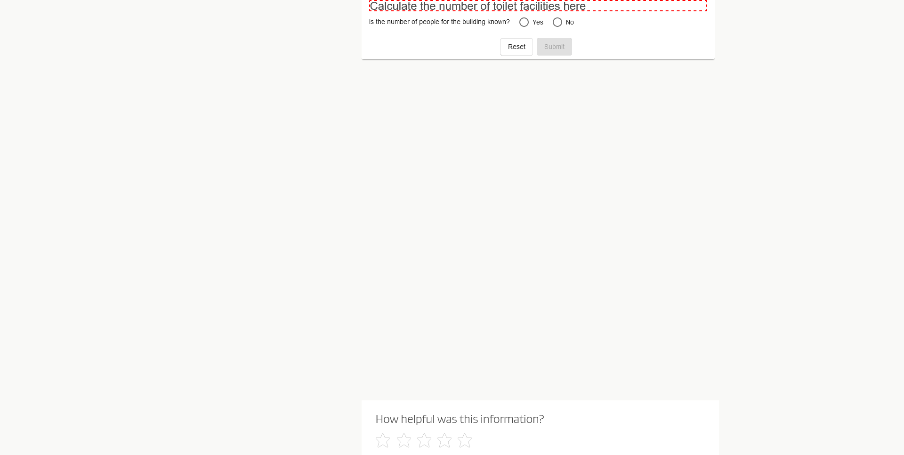 | |||||
| 15. | TRACE | Find element ⇒ By.xpath: //label[@for='countKnownNo-input'] | 11:57:26.437 | PageHelper.java | 452 |
| 16. | DEBUG | Clicking 'No' | 11:57:26.695 | ToiletCalculatorHomePage.java | 93 |
| 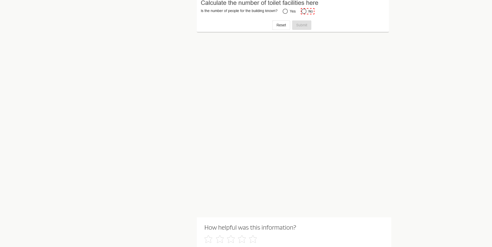 | |||||
| 17. | DEBUG | Click ⇒ By.xpath: //label[@for='countKnownNo-input'] | 11:57:26.713 | PageHelper.java | 280 |
| 18. Page Object: ToiletCalculatorHomePage | |||||
| 19. | DEBUG | Wait for any ajax requests to complete | 11:57:27.028 | PageObject.java | 46 |
| 20. | TRACE | Run JavaScript ⇒ | 11:57:27.057 | null | -1 |
|
|
|||||
| 21. | TRACE | Run JavaScript ⇒ | 11:57:27.069 | BasePageObject.java | 339 |
|
|
|||||
| 22. | TRACE | Find element ⇒ By.className: Spinner | 11:57:27.084 | BasePageObject.java | 339 |
| 23. | DEBUG | Checking ToiletCalculatorHomePage loads within 50 seconds | 11:57:27.094 | ActionTimer.java | 63 |
| 24. | TRACE | Find element ⇒ By.xpath: //h1[text()='Toilet calculator'] | 11:57:27.096 | BasePageObject.java | 339 |
| 25. | TRACE | ToiletCalculatorHomePage loaded in 0 seconds Current url: https://www.building.govt.nz/building-code-compliance/g-services-and-facilities/g1-personal-hygiene/calculator-for-toilet-pan/toilet-calculator/ |
11:57:27.145 | PageObject.java | 61 |
| 26. | TRACE | Find element ⇒ By.xpath: //iframe[@src='https://msg-tc-spa-as-prd.azurewebsites.net/'] | 11:57:27.146 | PageObject.java | 82 |
| 27. | DEBUG | Completed | 11:57:27.272 | StoryboardListener.java | 323 |
| 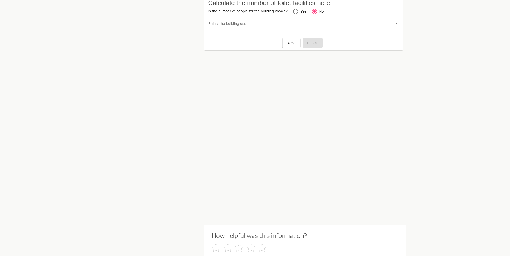 | |||||
| 28. | TRACE | Find element ⇒ By.cssSelector: #buildingUse | 11:57:27.274 | PageHelper.java | 452 |
| 29. | DEBUG | Clicking ' ' | 11:57:27.482 | ToiletCalculatorHomePage.java | 109 |
| 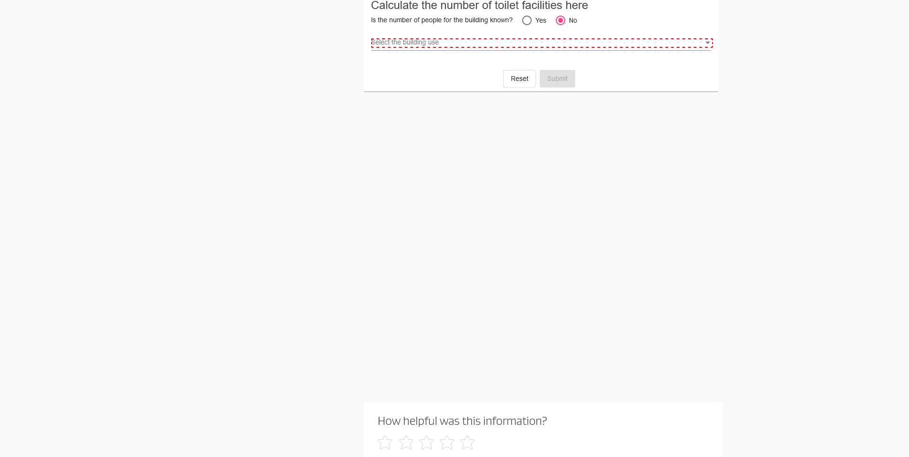 | |||||
| 30. | DEBUG | Click ⇒ By.css selector: #buildingUse | 11:57:27.490 | PageHelper.java | 280 |
| 31. Page Object: ToiletCalculatorHomePage | |||||
| 32. | DEBUG | Wait for any ajax requests to complete | 11:57:27.760 | PageObject.java | 46 |
| 33. | TRACE | Run JavaScript ⇒ | 11:57:27.790 | null | -1 |
|
|
|||||
| 34. | TRACE | Run JavaScript ⇒ | 11:57:27.802 | BasePageObject.java | 339 |
|
|
|||||
| 35. | TRACE | Find element ⇒ By.className: Spinner | 11:57:27.818 | BasePageObject.java | 339 |
| 36. | DEBUG | Checking ToiletCalculatorHomePage loads within 50 seconds | 11:57:27.826 | ActionTimer.java | 63 |
| 37. | TRACE | Find element ⇒ By.xpath: //h1[text()='Toilet calculator'] | 11:57:27.828 | BasePageObject.java | 339 |
| 38. | TRACE | ToiletCalculatorHomePage loaded in 0 seconds Current url: https://www.building.govt.nz/building-code-compliance/g-services-and-facilities/g1-personal-hygiene/calculator-for-toilet-pan/toilet-calculator/ |
11:57:27.892 | PageObject.java | 61 |
| 39. | TRACE | Find element ⇒ By.xpath: //iframe[@src='https://msg-tc-spa-as-prd.azurewebsites.net/'] | 11:57:27.893 | PageObject.java | 82 |
| 40. | TRACE | Find element ⇒ By.xpath: //mat-option[contains(@id,'mat-option')] | 11:57:27.917 | PageObject.java | 104 |
| 41. | DEBUG | Clicking 'Hospital' | 11:57:28.250 | ToiletCalculatorHomePage.java | 110 |
| 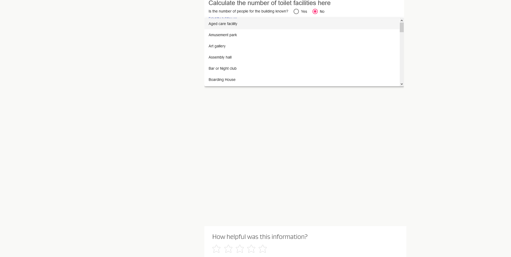 | |||||
| 42. | DEBUG | Click ⇒ By.xpath: //mat-option[contains(@id,'mat-option')] | 11:57:28.251 | PageHelper.java | 280 |
| 43. Page Object: ToiletCalculatorHomePage | |||||
| 44. | DEBUG | Wait for any ajax requests to complete | 11:57:28.503 | PageObject.java | 46 |
| 45. | TRACE | Run JavaScript ⇒ | 11:57:28.520 | null | -1 |
|
|
|||||
| 46. | TRACE | Run JavaScript ⇒ | 11:57:28.642 | BasePageObject.java | 339 |
|
|
|||||
| 47. | TRACE | Find element ⇒ By.className: Spinner | 11:57:28.659 | BasePageObject.java | 339 |
| 48. | DEBUG | Checking ToiletCalculatorHomePage loads within 50 seconds | 11:57:28.668 | ActionTimer.java | 63 |
| 49. | TRACE | Find element ⇒ By.xpath: //h1[text()='Toilet calculator'] | 11:57:28.669 | BasePageObject.java | 339 |
| 50. | TRACE | ToiletCalculatorHomePage loaded in 0 seconds Current url: https://www.building.govt.nz/building-code-compliance/g-services-and-facilities/g1-personal-hygiene/calculator-for-toilet-pan/toilet-calculator/ |
11:57:28.715 | PageObject.java | 61 |
| 51. | TRACE | Find element ⇒ By.xpath: //iframe[@src='https://msg-tc-spa-as-prd.azurewebsites.net/'] | 11:57:28.716 | PageObject.java | 82 |
| 52. | TRACE | Find element ⇒ By.cssSelector: #buildingUse | 11:57:28.732 | PageHelper.java | 452 |
| 53. | DEBUG | Clicking 'Hospital' | 11:57:28.953 | ToiletCalculatorHomePage.java | 111 |
| 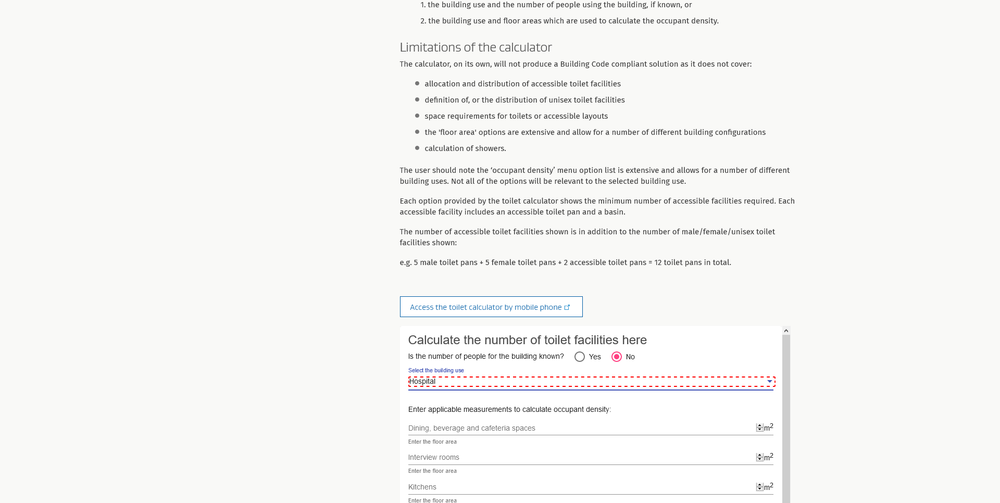 | |||||
| 54. Page Object: HospitalMeasurementPage | |||||
| 55. | DEBUG | Wait for any ajax requests to complete | 11:57:28.957 | PageObject.java | 46 |
| 56. | TRACE | Run JavaScript ⇒ | 11:57:28.976 | null | -1 |
|
|
|||||
| 57. | TRACE | Run JavaScript ⇒ | 11:57:28.986 | BasePageObject.java | 339 |
|
|
|||||
| 58. | TRACE | Find element ⇒ By.className: Spinner | 11:57:28.995 | BasePageObject.java | 339 |
| 59. | DEBUG | Checking HospitalMeasurementPage loads within 50 seconds | 11:57:29.005 | ActionTimer.java | 63 |
| 60. | TRACE | Find element ⇒ By.xpath: //iframe[@src='https://msg-tc-spa-as-prd.azurewebsites.net/'] | 11:57:29.007 | BasePageObject.java | 339 |
| 61. | TRACE | HospitalMeasurementPage loaded in 0 seconds Current url: https://www.building.govt.nz/building-code-compliance/g-services-and-facilities/g1-personal-hygiene/calculator-for-toilet-pan/toilet-calculator/ |
11:57:29.043 | PageObject.java | 61 |
| 62. | DEBUG | Completed | 11:57:29.176 | StoryboardListener.java | 323 |
| 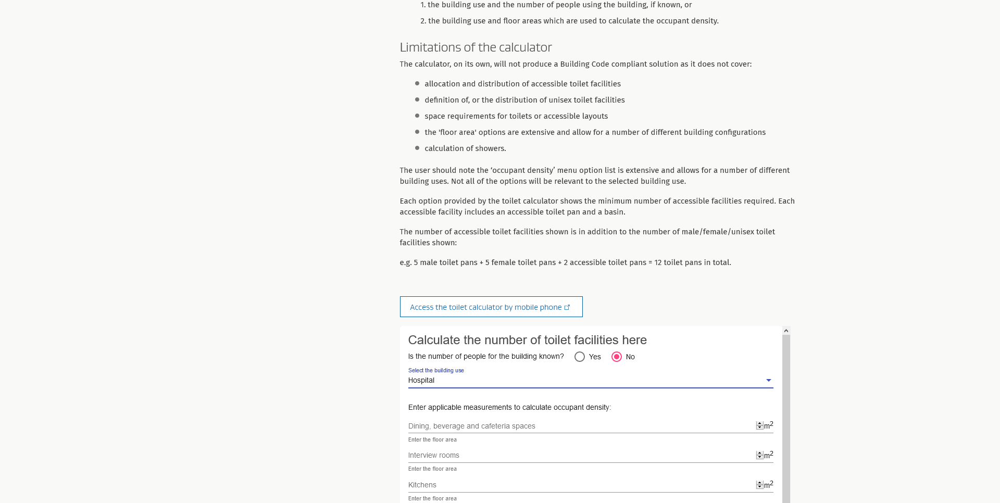 | |||||
| 63. | TRACE | Find element ⇒ By.xpath: //mat-label[contains(text(),'Dining, beverage and cafeteria spaces')]//ancestor::div[1]//input | 11:57:29.178 | HospitalMeasurementPage.java | 79 |
| 64. | DEBUG | Change value ⇒ of By.xpath: //mat-label[contains(text(),'Dining, beverage and cafeteria spaces')]//ancestor::div[1]//input from '[100]' to '[100]' | 11:57:29.233 | HospitalMeasurementPage.java | 79 |
| 65. | TRACE | Find element ⇒ By.xpath: //mat-label[contains(text(),'Interview rooms')]//ancestor::div[1]//input | 11:57:29.235 | HospitalMeasurementPage.java | 80 |
| 66. | DEBUG | Change value ⇒ of By.xpath: //mat-label[contains(text(),'Interview rooms')]//ancestor::div[1]//input from '[100]' to '[100]' | 11:57:29.293 | HospitalMeasurementPage.java | 80 |
| 67. | TRACE | Find element ⇒ By.xpath: //mat-label[contains(text(),'Kitchens')]//ancestor::div[1]//input | 11:57:29.294 | HospitalMeasurementPage.java | 81 |
| 68. | DEBUG | Change value ⇒ of By.xpath: //mat-label[contains(text(),'Kitchens')]//ancestor::div[1]//input from '[100]' to '[100]' | 11:57:29.343 | HospitalMeasurementPage.java | 81 |
| 69. | TRACE | Find element ⇒ By.xpath: //mat-label[contains(text(),'Laundry and house keeping facilities')]//ancestor::div[1]//input | 11:57:29.345 | HospitalMeasurementPage.java | 82 |
| 70. | DEBUG | Change value ⇒ of By.xpath: //mat-label[contains(text(),'Laundry and house keeping facilities')]//ancestor::div[1]//input from '[100]' to '[100]' | 11:57:29.396 | HospitalMeasurementPage.java | 82 |
| 71. | TRACE | Find element ⇒ By.xpath: //mat-label[contains(text(),'Lobbies and foyers')]//ancestor::div[1]//input | 11:57:29.397 | HospitalMeasurementPage.java | 83 |
| 72. | DEBUG | Change value ⇒ of By.xpath: //mat-label[contains(text(),'Lobbies and foyers')]//ancestor::div[1]//input from '[100]' to '[100]' | 11:57:29.470 | HospitalMeasurementPage.java | 83 |
| 73. | TRACE | Find element ⇒ By.xpath: //mat-label[contains(text(),'Offices and staffrooms')]//ancestor::div[1]//input | 11:57:29.471 | HospitalMeasurementPage.java | 84 |
| 74. | DEBUG | Change value ⇒ of By.xpath: //mat-label[contains(text(),'Offices and staffrooms')]//ancestor::div[1]//input from '[100]' to '[100]' | 11:57:29.523 | HospitalMeasurementPage.java | 84 |
| 75. | TRACE | Find element ⇒ By.xpath: //mat-label[contains(text(),'Personal service facilities')]//ancestor::div[1]//input | 11:57:29.524 | HospitalMeasurementPage.java | 85 |
| 76. | DEBUG | Change value ⇒ of By.xpath: //mat-label[contains(text(),'Personal service facilities')]//ancestor::div[1]//input from '[100]' to '[100]' | 11:57:29.576 | HospitalMeasurementPage.java | 85 |
| 77. | TRACE | Find element ⇒ By.xpath: //mat-label[contains(text(),'Reception areas')]//ancestor::div[1]//input | 11:57:29.577 | HospitalMeasurementPage.java | 86 |
| 78. | DEBUG | Change value ⇒ of By.xpath: //mat-label[contains(text(),'Reception areas')]//ancestor::div[1]//input from '[100]' to '[100]' | 11:57:29.640 | HospitalMeasurementPage.java | 86 |
| 79. | TRACE | Find element ⇒ By.xpath: //mat-label[contains(text(),'Toilets and subordinate spaces (no occupants counted)')]//ancestor::div[1]//input | 11:57:29.641 | HospitalMeasurementPage.java | 87 |
| 80. | DEBUG | Change value ⇒ of By.xpath: //mat-label[contains(text(),'Toilets and subordinate spaces (no occupants counted)')]//ancestor::div[1]//input from '[100]' to '[100]' | 11:57:29.692 | HospitalMeasurementPage.java | 87 |
| 81. | TRACE | Find element ⇒ By.xpath: //mat-label[contains(text(),'Beds')]//ancestor::div[1]//input | 11:57:29.694 | HospitalMeasurementPage.java | 88 |
| 82. | DEBUG | Change value ⇒ of By.xpath: //mat-label[contains(text(),'Beds')]//ancestor::div[1]//input from '[100]' to '[100]' | 11:57:29.741 | HospitalMeasurementPage.java | 88 |
| 83. | TRACE | Find element ⇒ By.xpath: //mat-card-title[contains(text(),'Calculate the number of toilet facilities here')]//ancestor::mat-card[1] | 11:57:29.742 | PageHelper.java | 452 |
| 84. | DEBUG | Clicking 'Calculate the number of toilet facilities here Is the number of people for the building known? Yes No Hospital Select the building use Enter applicable measurements to calculate occupant density: Dining, beverage and cafeteria spaces m2 Enter the floor area Interview rooms m2 Enter the floor area Kitchens m2 Enter the floor area Laundry and house keeping facilities m2 Enter the floor area Lobbies and foyers m2 Enter the floor area Offices and staffrooms m2 Enter the floor area Personal service facilities m2 Enter the floor area Reception areas m2 Enter the floor area Toilets and subordinate spaces (no occupants counted) m2 Enter the floor area Beds beds Enter the number of beds Reset Submit' |
11:57:30.215 | HospitalMeasurementPage.java | 90 |
| 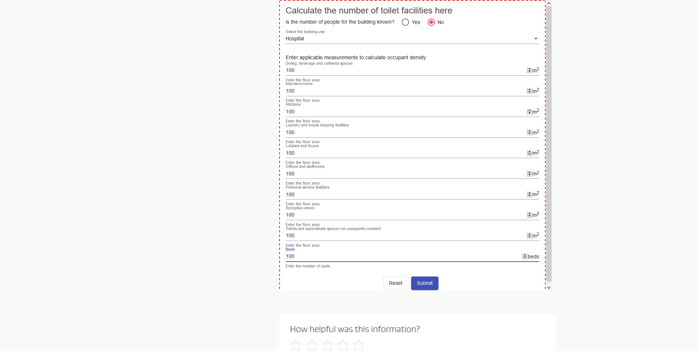 | |||||
| 85. | TRACE | Find element ⇒ By.cssSelector: #submit | 11:57:30.216 | PageHelper.java | 452 |
| 86. | DEBUG | Clicking 'Submit' | 11:57:30.419 | HospitalMeasurementPage.java | 91 |
| 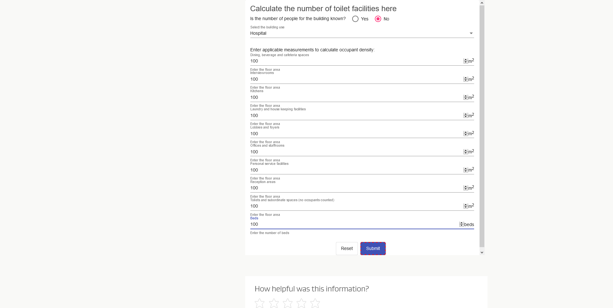 | |||||
| 87. | DEBUG | Click ⇒ By.css selector: #submit | 11:57:30.426 | PageHelper.java | 280 |
| 88. Page Object: HospitalToiletFacilityResultPage | |||||
| 89. | DEBUG | Wait for any ajax requests to complete | 11:57:30.684 | PageObject.java | 46 |
| 90. | TRACE | Run JavaScript ⇒ | 11:57:31.000 | null | -1 |
|
|
|||||
| 91. | TRACE | Run JavaScript ⇒ | 11:57:31.121 | BasePageObject.java | 339 |
|
|
|||||
| 92. | TRACE | Find element ⇒ By.className: Spinner | 11:57:31.179 | BasePageObject.java | 339 |
| 93. | DEBUG | Checking HospitalToiletFacilityResultPage loads within 50 seconds | 11:57:31.199 | ActionTimer.java | 63 |
| 94. | TRACE | Find element ⇒ By.xpath: //iframe[@src='https://msg-tc-spa-as-prd.azurewebsites.net/'] | 11:57:31.200 | BasePageObject.java | 339 |
| 95. | TRACE | HospitalToiletFacilityResultPage loaded in 0 seconds Current url: https://www.building.govt.nz/building-code-compliance/g-services-and-facilities/g1-personal-hygiene/calculator-for-toilet-pan/toilet-calculator/ |
11:57:31.264 | PageObject.java | 61 |
| 96. | DEBUG | Completed | 11:57:31.446 | StoryboardListener.java | 323 |
| 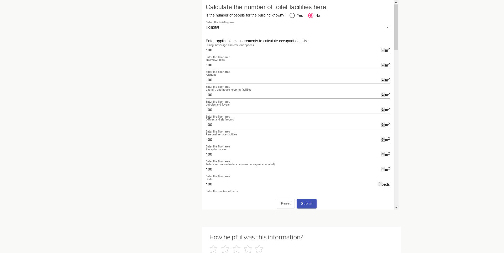 | |||||
| 97. | TRACE | Run JavaScript ⇒ | 11:57:31.447 | null | -1 |
|
|
|||||
| 98. | TRACE | Find element ⇒ By.xpath: //span[text()='Print']//ancestor::button[1] | 11:57:31.448 | null | -1 |
| 99. | TRACE | Find element ⇒ By.xpath: //div[text()='Calculated number of toilet facilities'] | 11:57:31.486 | PageHelper.java | 452 |
| 100. | DEBUG | Clicking 'Calculated number of toilet facilities' | 11:57:31.744 | HospitalToiletFacilityResultPage.java | 49 |
| 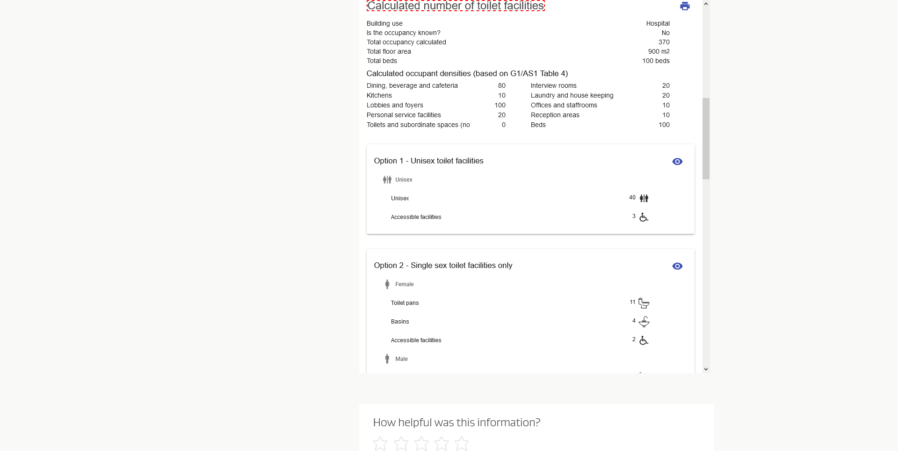 | |||||
| 101. | DEBUG | Completed | 11:57:31.871 | StoryboardListener.java | 323 |
| 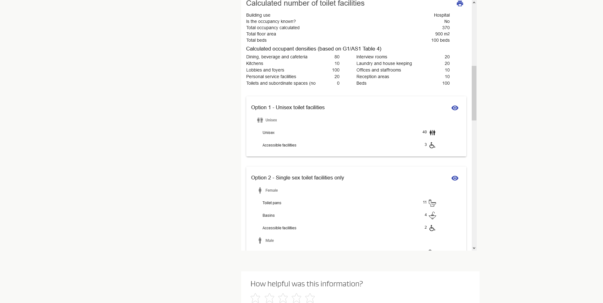 | |||||
| 102. | DEBUG | Clicking 'Calculated number of toilet facilities' | 11:57:32.071 | HospitalToiletFacilityResultPage.java | 61 |
| 103. | TRACE | Run JavaScript ⇒ | 11:57:32.071 | null | -1 |
|
|
|||||
| 104. | TRACE | Find element ⇒ By.xpath: //span[text()='Print']//ancestor::button[1] | 11:57:32.072 | null | -1 |
| 105. | DEBUG | Clicking 'Print' | 11:57:32.309 | HospitalToiletFacilityResultPage.java | 63 |
| 106. | DEBUG | Click ⇒ By.xpath: //span[text()='Print']//ancestor::button[1] | 11:57:32.316 | PageHelper.java | 280 |
| 107. Page Object: HospitalToiletFacilityResultPage | |||||
| 108. | DEBUG | Wait for any ajax requests to complete | 11:57:32.940 | PageObject.java | 46 |
| 109. | TRACE | Run JavaScript ⇒ | 11:57:33.335 | null | -1 |
|
|
|||||
| 110. | TRACE | Run JavaScript ⇒ | 11:57:33.347 | BasePageObject.java | 339 |
|
|
|||||
| 111. | TRACE | Find element ⇒ By.className: Spinner | 11:57:33.357 | BasePageObject.java | 339 |
| 112. | DEBUG | Checking HospitalToiletFacilityResultPage loads within 50 seconds | 11:57:33.367 | ActionTimer.java | 63 |
| 113. | TRACE | Find element ⇒ By.xpath: //iframe[@src='https://msg-tc-spa-as-prd.azurewebsites.net/'] | 11:57:33.369 | BasePageObject.java | 339 |
| 114. | TRACE | HospitalToiletFacilityResultPage loaded in 0 seconds Current url: https://www.building.govt.nz/building-code-compliance/g-services-and-facilities/g1-personal-hygiene/calculator-for-toilet-pan/toilet-calculator/ |
11:57:33.417 | PageObject.java | 61 |
| 115. | INFO | Finishing example generate-toilet-facility-result-for-hospital-with-people-capacity-count-unknown-using-toilet-facility-calculator-tool-test | 11:58:26.997 | CubanoMbieFixtureLogger.java | 20 |
{kind=link}
{kind=link}
{kind=link}
{kind=link}
{kind=link}
{kind=link}
{kind=link}
{kind=link}
{kind=link}
{kind=link}
{kind=link}
{kind=link}
{kind=link}
{kind=link}